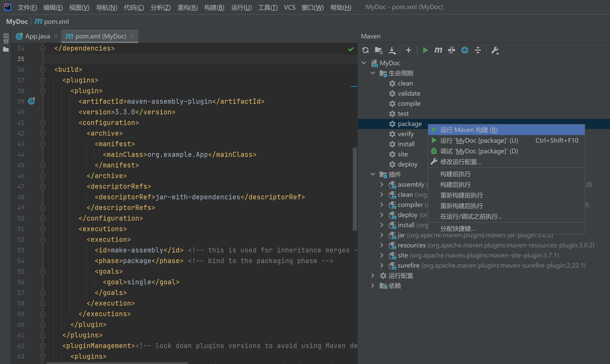
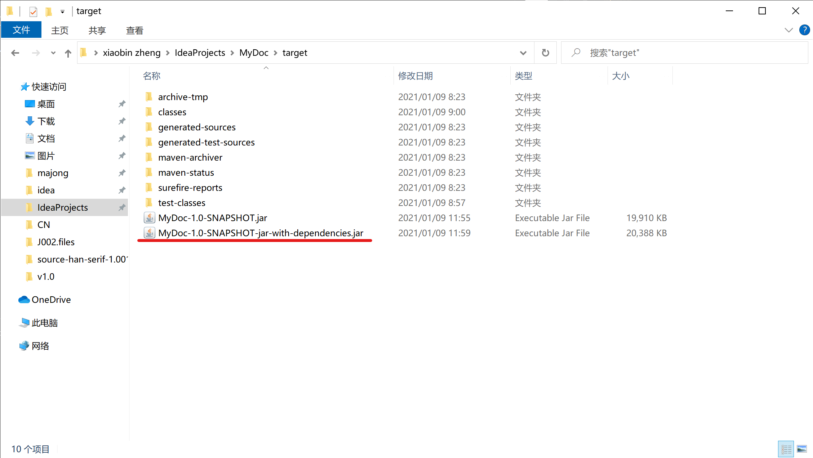
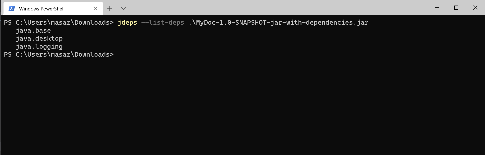
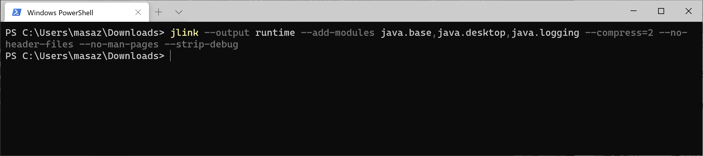
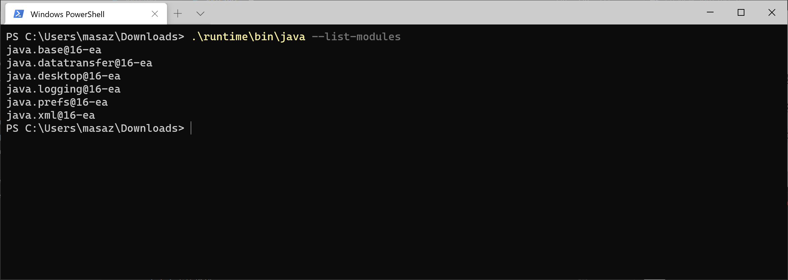
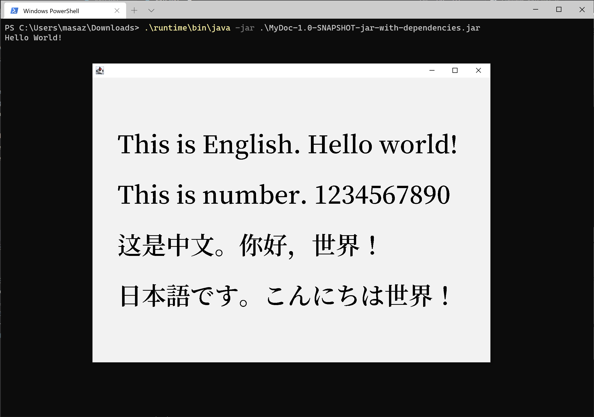
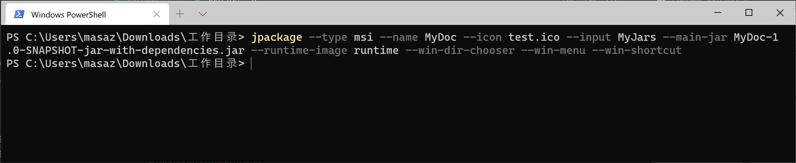
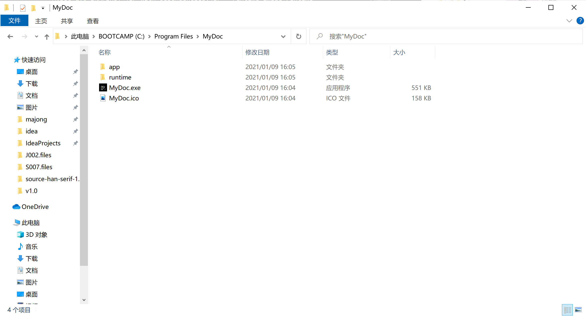
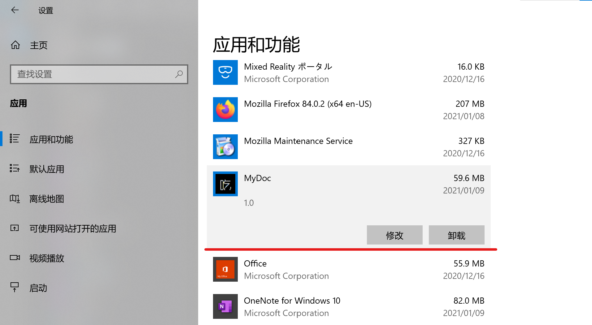

1.7 打包成可执行程序
更新日期：2021-01-09
1. 概述
在这篇文章中我们来讨论一下Java程序的打包问题。 这里的Java程序指的是本地运行的Java控制台程序或者是GUI程序。Java Web程序的打包与发布与本地程序适合采用的方式很不一样，这里不做讨论。
当我们的程序写完之后。我们都希望这个程序是有用的，而且是便于使用的。 一个便于使用的程序我认为要具有下面这些特点：
- 易于发布
- 易于安装
- 易于运行
- 友好的使用界面
关于程序的使用界面，不在这次的讨论范畴中。本篇文章的目标是前三个。
2. Java程序面临的问题
我们都知道，Jave程序需要JRE环境才能运行。而且有很多的共用类库，也就是第三方jar包供我们使用。而Java的打包方式又是多种多样的。这在一定程度上造成了混乱。
其他用户在使用Java程序时，往往会遇到如下几个问题：
- 没有安装Jave运行时环境Jre，无法运行
- 安装的Jre版本过低，无法运行
- 缺少依赖的第三方Jar包，无法运行
- 只拿到一个Jar包，不知道该如何运行
本篇文章的具体目标就是为了解决如上几个问题。但首先我先说明一下为何会有这几个问题。
2.1 问题一：没有安装Jave运行时环境Jre，无法运行
本来按照设想，Java在普及度提高以后会成为各大操作系统上一定会被安装的组件。然而事实情况却是: Java只在大型Web服务器上普及。
因为大型Web项目，使用Java来开发的公司是很多的。所以服务器上通常都装有Java环境。 而本地程序则没有多少人用Java开发。所以一般用户的电脑上都是没有安装Java运行时环境的。
这个和Windows的VC++ 运行时环境是类似的。微软当然是可以让Windows操作系统自带VC++运行时环境。同理苹果公司也可以让Mac OS X自带自己的一些运行时环境。但Java就没有办法了，必须由用户手动安装。
2.2 问题二：安装的Jre版本过低，无法运行
即使用户安装了Jre，也可能由于版本问题的原因而无法运行。
现在Java的版本迭代是很快的，半年一个全新的正式版本。在大多数Java程序还在使用Java8甚至是Java1.7时。Java15已经正式发布，Java16也快要发布了。（2021年1月时点）
有一部分Java程序员喜欢尝试新版本中的新特性，比如我。所以我开发的Java程序通常需要最新的正式版Java环境。这样的话，很多人的机器上还安装的Java8，就无法运行。
并且，由于Java的后几个版本的改动都有点大。所以，我们安装了一个较低版本的Jre之后，每次发布新版本时并不会自动升级到新版Jre。
2.3 问题三：缺少依赖的第三方Jar包，无法运行
本来Java的各个程序可以共用一些第三方Jar包，这样这些Jar包只需要在机器上保存一份就可以。然后程序就不需要再带着这个Jar包。这样能减小程序Jar包的体积。
然而事实情况是，我们通常情况下没有能力创造这样一种环境。或者说太麻烦，实现起来很复杂。
这里举个例子来说明。
Tomcat
虽然我说不讨论Web程序，但用来举例恰好是合适的。
假设我们公司开发的Web应用都将部署到Tomcat上，那么服务器上自然要安装Tomcat。 而Tomcat会自带一些我们开发Java Web程序时经常用到的一些Jar包。这样我们的Web程序在打包的时候就不需要带着这些包了。
2.4 问题四：只拿到一个Jar包，不知道该如何运行
我们通过IDE编写好程序后给我们生成的就是一个Jar包，而程序员都知道使用java -jar命令来运行Jar包。
但是普通人并不知道。或者说即使是知道，要这样来运行程序很麻烦，很别扭。 更何况，没有安装正确版本的Jre时，也不能这样来运行jar包。同时用户也很难按我们想的那样去指定jvm参数。
3. 问题的解决策
其实，关于如何发布程序（不限于Java）。是有现成的方案的。
比如：在线安装包。
在线安装包
这也是现在很多软件安装包喜欢采用的方式。所有运行所需要的文件都可以按需下载到用户的机器上，当然文件的版本也能保证是正确的。安装完成之后即可正常运行。Jre也可以这样来安装。
用起来很舒服，但是做起来就有点复杂了。而且还需要一台服务器去存放安装所需的文件。 如果我们只是写一些小工具之类的程序，就生成一个几十KB的Jar包，也没必要花费功夫去搞这些玩意儿。
又比如：战网模式。
战网模式
战网，也即是暴雪战网。当然战网并不使用Java语言，但我们假设它使用Java语言，正好可以拿来举例。
我们安装了战网后，可以在战网的界面上选择安装各种游戏。战网就可以起到一个中间运行时平台的作用。
安装战网的时候，我们可以直接把各个游戏用到的Jre给安装上。同样各个游戏共用的第三方Jar包也可以直接部署上。即使有不同的游戏用了不同的Jre版本，我们也可以把这几个版本的Jre都给安装上。
更新战网的时候，这些Jre和第三方Jar包也会按我们所需进行更新。
这和上面举例说到的Tomcat是类似的。 但是，同样的。实现起来太麻烦。
我们这里想说的是简单的，容易实现的方案。也就是把运行所需要的所有文件直接打包，发布给用户。 这就意味着。
- 内嵌Jre运行时环境。用户的机器上不用安装Java环境也能运行。
- 包含所有依赖的第三方Jar包。用户的机器上不需要额外下载任何其他东西。
由于我们内嵌了Jre，版本当然不会有问题。这样问题一和二就解决了。 我们也包含了所有依赖的第三方Jar包。所以问题三也解决了。
而对于问题四，针对各个PC操作系统。我们将把Jar包包装成该系统中的可执行程序。让他和系统上的其他程序看起来一样。 比如：Windows系统上，把Jar包给包装成exe可执行程序。用户拿到后都知道双击exe就能运行，或者是点击菜单中的程序图标来运行。 这样就不用安装Jre环境敲命令了，同时jvm调优参数我们也能包装进去，也保证了程序的性能。
下面就详细的介绍一下这个方案的实现细节。主要分为如下几个步骤。
- 将程序打包为包含所有依赖的可执行Jar包
- 制作迷你JRE运行时环境包
- 将Jar包和迷你JRE打包为操作系统中的可执行程序包
4. 解决方案的具体步骤
4.1 将程序打包为包含所有依赖的可执行Jar包
使用Maven来打包是比较方便的。而Java IDE通常会集成Maven让我们可以用图形界面去执行Maven命令，可以说是很贴心了。
好在这件事做起来很简单，只需在pom.xml文件中进行如下配置。
pom.xml
1 2 3 4 5 6 7 8 9 10 11 12 13 14 15 16 17 18 19 20 21 22 23 24 25 26 27 28 | |
也就是使用了Maven的maven-assembly-plugin插件来完成这个任务，这个插件的具体用法可以参考Maven的官方文档:
上面的代码也是我直接从官方文档中拷贝出来的。 简单的说明一下。
配置说明
1 2 3 4 5 6 7 8 9 10 11 12 13 14 15 | |
说了半天，其实一般情况下，我们把上面的代码拷到自己的pom.xml后，只需要改一下主类的配置就行了。
特别提醒
如果你正在使用IntelliJ IDEA作为Java IDE，则IDEA自动生成的pom.xml文件中会包含如下代码块：
1 2 3 4 5 6 7 8 9 10 11 12 13 14 15 16 | |
<plugin>不是放在这个<pluginManagement>里面的。是放在如下的位置：
1 2 3 4 5 6 7 8 9 | |
配置完成后，我们执行mvn package命令就可以生成Jar包了。在IDEA中，使用Maven工具面板上的package命令可以轻松的完成这个任务。

执行完成后，会生成两个Jar包。

带jar-with-dependencies的那个就是包含了所有依赖Jar包的，另外一个则是普通的。可以看到它的体积比普通的那个要大。
然后我们要验证一下这个Jar包确实是能正常执行的。把它随便拷到一个什么地方，然后使用java -jar命令来执行。
这是我的程序的运行效果。
这样的话，我们的第一步就成功了。
4.2 制作迷你JRE运行时环境包
这里我将使用JDK中附带的一些工具来完成这个任务，但是这些工具需要Java14或者以上的版本。如果你是使用较低版本的Java，请寻找其他方法。
我们都知道JDK的体积是很大的，通常有几百MB，而我们的程序一般不会使用到Java的所有功能模块。也就意味着如果把整个JDK打进去，则会有大量的文件是没有被使用到的，白白浪费空间。 这一步就是要把这些没用的东西都去除掉。生成一个迷你的Jre。
这个操作我分为两步：
- 找出我们的程序使用到的Java功能模块
- 打包时只使用上面找到的那些功能模块
4.2.1 找出我们的程序使用到的Java功能模块
这里可以使用JDK的jdeps工具来完成这个任务。它的详细用法我们可以去看JDK官方文档：
这里我们只说如何来完成我们这项任务。执行如下命令即可：
jdeps
1 | |
下面是我的MyDoc程序的运行结果： 
由于我们的程序非常简单，所有只用到了这三个组件。如果是复杂一点的程序，可能这个列表会很长。
这时，我们就记下这个运行结果，以备后用。
4.2.2 打包时只使用上面找到的那些功能模块
使用JDK的jlink这个工具来生成Jre运行时环境包。它的详细用法还是去看JDK官方文档：
这里我们还是只关注如何来完成我们的这些任务。执行如下命令即可：
jlink
1 | |
各个选项的参数该怎么设置呢？
选项 |
参数的值 | 说明 |
|---|---|---|
| output | 生成的文件存放的目录 | 也就是生成的Jre运行时环境包存放的目录。注意指定的文件夹必须不存在，生成时会自动创建文件夹，如果已存在则命令会报错。 |
| add-modules | 模块列表 | 把哪些JDK模块包含进去。这里就设我们上一步jdeps命令找出来的模块列表。例如我的MyDoc程序的例子就是：--add-modules java.base,java.desktop,java.logging |
| compress= | 压缩级别(0,1,2) | 不用说了，当然级别越高，压缩后的体积越小了。直接设定为2。 |
| no-header-files | 无 | 不包括无用的header文件。 |
| no-man-pages | 无 | 不包括无用的man pages文件。 |
| strip-debug | 无 | 剥离无用的调试信息。 |
下面是我的MyDoc程序的运行结果：
jlink
1 | |

生成的文件：
观察这个生成的文件夹，发现它的大小是38.9MB，感觉还是有点大的。
现在我们要验证生成的迷你Jre是否好用。
首先我们把环境变量里的JAVA_HOME去掉，使系统变成没有安装Java环境的状态。此时运行java命令会直接报错。

然后使用我们刚才生成的迷你Jre，先列出它包含的模块。
列出JRE模块
1 | |

发现除了我们指定的那几个模块之外，还多了几个，不过这也无伤大雅。这就是我们的迷你JRE里面包含的所有模块了。
最后用这个迷你Jre来运行我们的Jar包试试看。
列出JRE模块
1 | |

可以看到，成功的运行了我们的这个演示程序。 这样，我们的迷你JRE运行环境包就完成了。
4.3 将Jar包和迷你JRE打包为操作系统中的可执行程序包
Jar包和迷你JRE我们制作完成了，现在我们的程序算是已经可以运行了。接下来该把它打包成可执行程序包了。
这一步可以选择的工具是很多的。比如Windows平台上的launch4j、exe4j等。这里我们就使用JDK的jpackage工具来完成这项任务，这个工具比较新。还是老规矩，它的详细用法去看JDK官方文档：
我们只关注如何来完成我们的这些任务。不过这次要先说明一下我们准备生成怎样的可执行程序包。
现在有3大主流桌面操作系统：Windows、Mac OS X、Linux。 Java程序可以在这三大系统中运行。而这三大系统分别使用不同的可执行程序，那我们自然要分别生成不同的可执行程序包。
- 针对Windows
- 1.生成绿色免安装的可执行程序文件。包含一个文件夹和里面的多个文件。可直接执行根目录的
.exe来运行程序。而且可以使用其他工具来进一步制作成安装包。 - 2.生成
.exe或者.msi格式的单个程序安装包文件。执行这个安装包后将开始一个安装过程，安装完毕后与系统上其他程序一样。可加入开始菜单，可受系统的软件管理功能控制。
- 1.生成绿色免安装的可执行程序文件。包含一个文件夹和里面的多个文件。可直接执行根目录的
- 针对Mac OS X
- 生成
.pkg或者.dmg格式的单个程序安装包文件。与安装其他Mac程序的过程完全相同。
- 生成
- 针对Linux
- 生成
.deb或者.rpm格式的单个程序安装包文件。可使用Linux上的包管理器安装。
- 生成
在jpackage工具中，可以通过设置选项--type的参数来指定生成那种结果文件。
这个参数的设置方法如下：
| No. | 平台 | 目标格式 | type参数应设置的值 |
|---|---|---|---|
| 1 | Windows | 绿色免安装包 | app-image |
| 2 | Windows | .exe | exe |
| 3 | Windows | .msi | msi |
| 4 | Mac OS X | .pkg | pkg |
| 5 | Mac OS X | .dmg | dmg |
| 6 | Linux | .deb | deb |
| 7 | Linux | .rpm | rpm |
要完成我们的任务，jpackage工具的完整的命令用法如下：
jpackage
1 | |
唯一需要说明的是这个--input，这个目录下所有的文件都会被打包进去，不只是那个可执行jar包。
下面，还是演示Java程序MyDoc，以生成Windows系统上的.msi格式的安装包为例来运行一下这个命令。（其他格式的话，用法都是相同的，只需修改选项--type的值）
不过，在执行命令前，先做一些准备工作。
- 准备一个
.ico格式的图标文件。 - 新建一个文件夹，把我们的可执行Jar包放进去。
准备完成后，结构如下：
目录结构
1 2 3 4 5 6 7 8 9 10 11 12 13 14 | |
然后我们要执行的命令是：
生成.msi
1 | |
这里我在后面加了三个额外的选项，可以使我们的安装包在安装的时候可以指定安装的位置。并将添加到开始菜单，然后会创建一个桌面快捷方式。
要记住，jpackage还有更多的功能。而且针对不同的操作系统还有不同的选项，这里我演示的只是Windows系统中的可用选项。
10秒左右过后，生成完毕。 
看看我们的目录下，确实是生成了一个.msi安装包文件。
运行这个安装包，我们就可以把程序安装在我们的Windows系统中了。
※此时我们再次把环境变量里的JAVA_HOME去掉，使系统变成没有安装Java环境的状态。在这个状态下运行安装包，并执行安装后的程序，确认是否能正常运行。
双击安装程序，我们将会看到熟悉的Windows经典安装界面。
等安装完成后。可以到我们选的安装位置里去看一下里面都有什么。 
各个文件夹存放的内容如下： 文件或文件夹 | 内容 | :--|:--| app|存放可执行Jar包相关的文件。 runtime|存放迷你JRE环境的文件。 MyDoc.exe|可执行程序。 MyDoc.ico|图标文件。
如果上面选择打包成绿色免安装包，则生成的文件目录结构就是跟这个一模一样的。
现在从开始菜单中点击执行我们的程序，以验证我们打的安装包确实没有问题。 运行效果如下：
到这里，我们的打包任务就完成了。 同时，这里也可以查看一下系统的软件管理器，看是否我们的程序是被系统所管理的。 
没有问题，我们的安装包做的很漂亮。到这里整个任务总算是可以结束了。